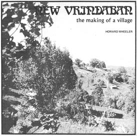
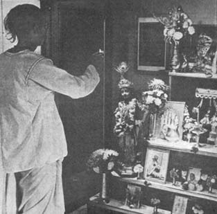
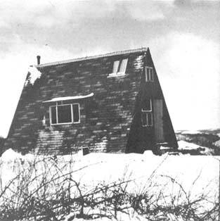

I've seen members of the International Society for Krishna Consciousness chanting "Hare Krishna" on the streets of New York and San Francisco so many times that I was immediately interested when I heard of the Society's commune in West Virginia. When I further learned that the settlement (New Vrindaban Community, R.D. 3, Moundsville, West Virginia) was not only succeeding, but actually expanding into an actual village devoted to Vedic culture, I decided to pay the commune a visit.
Moundsville is only about 12 miles south of Wheeling, West Virginia and I was soon turning off State Road 88 to 250 South through rolling Appalachian hills and small farms. The land was beautiful-hilly, not mountainous-and the terrain was covered with maples, poplars, oaks, locust and the light green of early summer grass. In a few minutes I left 250 for Limestone Hill Road, followed the narrow gravel byway over a long rambling ridge . . . and arrived at New Vrindaban at eleven in the morning.
I was greeted by Kirtanananda Swami, one of the original founders of the settlement. Kirtanananda-a short cheerful man in his mid-thirties who, like all Krishna devotees, assumed a Sanskrit name upon initiation into the Society-explain explained that the community was primarily financed through the manufacture of incense and invited me into one of the commune's "factories". After explaining how the incense punks were dipped into oils, packaged and shipped, Kirtanananda showed me the rest of the property.
As we looked over the large white farmhouse, barn and smaller buildings near the road, I was impressed by the flurry of activity as approximately 20 Krishna devotees bustled about their chores. The women were cooking, cleaning the house and looking after children while the men tended cows, strung fence, repaired and expanded structures,. worked on vehicles and manufactured incense.
"This is just one of the three farms that now make up New Vrindaban Community," my guide informed me," and each piece of land has its own name. Vrindaban is our original property, this farm is called Bahulaban and our third is Madhuban. Ban means forest and the names we've chosen are those of forests in India where Lord Krishna traditionally sported as God on earth."
"How long have you been here and how much land does the community own?"
"We moved onto the original property in 1968 and our three farms now total 365 acres," Kirtanananda said. "Come. Let me show you Madhuban. It's only three miles away."
Madhuban, like Bahulaban, contained hilly pastures and hayfields that stretched up from both sides of the road . . . plus a very beautiful pine forest. As at Bahulaban, the women were cooking and cleaning and the men were dipping incense in sheds near an old two-story main farmhouse. Behind the house a half dozen men tilled a two-acre plot-"We'll have a garden on each farm this year. Here we're planting corn, tomatoes, lettuce, squash, broccoli and cabbage and we have potatoes, watermelons, beets and peanuts at the other farms."-and someone was trying to work an ox in a harness in the back field.
From the top of the main ridge on Madhuban, Kirtanananda pointed out a clean sweep of land extending six or eight miles. "Eventually we'll get all this," he said. "This isn't just a community we're planning . . . it's a village. Later we might incorporate into a township, like the original Vrindaban in India. And that farmhouse, two A-frames and group of cottages you see on that opposite ridge is our Vrindaban. After lunch Paramananda, the manager of our farming program, will take you over there."
As my new guide and I-in a red Ford pickup-started up the two-mile dirt road to the community's original farm, we passed a stack of old lumber. "A couple of years ago we tore down a house in town for the free boards and timber," Paramananda explained, "but it wasn't worth it. Too much trouble . . and we soon found that the lumber currently sold by commercial yards is inferior and expensive."
"So what's your alternative?"
"If you're careful, you really don't have to pay much for building materials," Paramananda said. "We have an arrangement with a house wrecker who sells us good, used timber cheap. Sometimes he gives it away just to get it off his hands. He phones to let us know when there's a building with especially good floors or beams worth salvaging and we pick them up. This way we get the best with minimum effort and cost. They put good hardwood into houses 40 and more years ago and-if it hasn't gotten wet-it's just as good now as it was then. You can't buy lumber like that anymore. We salvage the wood and as many bricks as we want."
"I should think you'd build cabins from some of the trees around here."
"Well, these really aren't the best trees for that . . . they're not straight enough. Then too, cutting trees and hauling them out takes too long. We can have three cottages up in the time it takes to build one cabin. And besides that, we rarely cut a living tree unless it's for a good purpose. Our Guru says we shouldn't kill trees unnecessarily because they're living entities with souls . . . so we use only dead wood for fuel. Actually we have a tree and game preserve here that, eventually, should be a couple of miles square or about the size of a small State Park. We're trying to retain the natural beauty of the place."
I held on tightly as the truck banged into a series of deep ruts. Mud and water splashed through the windows. "Hare Krishna! We've got to get more gravel in there," Paramananda smiled . . . but I suspected that he was really inwardly wincing and estimating the damage.
"How long have you been working on this road?" I asked.
"About two years. We buy the slag and fill the holes-starting with the worst ones-by hand. Believe it or not, this trail is 100% improved. In the beginning we couldn't get up here at all except with horse and cart. Now we're driving back and forth every day."
"But wouldn't horses be more in line with the self-sufficiency which I understand your community is striving for?"
"For us, at present, self-sufficiency means the simplest way. When you're trying to get supplies up, 'quickest is best'."'
"How did you go about learning to fix the road?"
"We ask around when we need instruction. The farmers here have been a big help."
"They don't give you trouble?"
"Oh no. Most of them seem sympathetic. I mean we're unusual and all, but they seem to have accepted us."
"Most communes," I said, "have a different story."
"Well, people usually feel threatened by any group that brings in drugs or free sex. When the folks here saw that we had no interest in either, they let down their guards and became friendly. We've been saved a lot of labor and money by local farmers and mechanics who've told us what to do and shown us how to do it."
I was impressed. I had visited a number of intentional communities . . . and this was the first that wasn't waging some kind of warfare with its neighbors.
Due to the condition of the road, it took us 30 minutes to cover the two miles to Vrindaban . . . but the ride was a delight. The maple and poplar forest spread a joyful light-green canopy over our heads and, from one of the hills, I could see down a ravine to a beautiful waterfall. "Yes," Paramananda said, "we have two waterfalls where we often bathe."
As we rounded the last bend to Vrindaban, the main house loomed in sight over a ravine. Past the structure I counted at least seven mountain ridges stretching into the distance. The farmhouse-well over 100 years old-had been restored and served as a central eating place and a center for Krishna worship (its main room had been converted into a temple complete With two elaborately throned, dressed and garlanded white marble statues of Krishna and Radha).
In an office above the temple, Paramananda introduced me to Hayagriva das, President and co-founder of the community. Hayagriva, a large man in his early 30's, had heard that I was writing a book on communes and said he would be pleased to furnish any information I wanted. "There are eight cottages, two A-frames and two domes sprinkled further up the road behind this house," Hayagriva said. "Let's talk as we walk up to the A-frame on top of the hill. The view from up there is quite pleasant."
The cottages built by the community's residents measure 10 x 16 . . . just large enough to house two people and their belongings. As we passed one of the structures, Hayagriva showed me inside. "We've built a dozen of these and we limit each to use as quarters for a married couple, two single men or two women."
"How much do the cottages cost?"
"Oh, from $300 to $500, depending on whether the people who live in a particular house want extras or not . . . and depending on where we get the lumber. We're getting much of our building materials free now and the cottages we're constructing at present run us under $300."
"Who pays for the houses?"
"The incense business pays all the bills. It allows us to supply everyone with a dwelling-clothes, if need be-and with food. We also take care of medical expenses. If an individual wants extras, however-such as oil heat instead of wood, or a more elaborate house-he has to supply them himself."
"Is heating a problem?"
"No. We've converted a number of oil drums into wood stoves. They're inexpensive and work quite well. Some people who come here, though, choose to buy an oil heater, which may run up to $100. Then they have to buy the oil, which can cost $40 or $50 for the winter.
"Tell me about the cows. I know that-just like Krishna-you protect them. Isn't that expensive?"
"We do keep cows for religious reasons. The big commercial milk farms, you know, slaughter their stock when the animals are five to seven years old. Since a cow will normally live to an age of 19 or 20, that means that they're not even allowed to live out half their years. Here, on the other hand, our cattle are kept throughout their natural lives. We presently have about two dozen Jerseys, Holsteins and Guernseys. The Jerseys-and we primarily keep Jerseys-cost us $200 and $300 or $350 will buy a Holstein. We breed them artificially to the best bulls in the country for around $20 a throw."
"Do your pastures sustain all your cows?"
"In their present condition the combined farms yield enough pasture and timothy, orchard grass, alfalfa and bluegrass had for about 30 milk cows. We do buy some grain for the cattle but, as we increase our manpower, we'll be able to cultivate more corn than we now raise . . . and thereby reduce that feed bill."
"Do you have all the machinery you need for such farming?"
"We have two tractors, a bush-hog for clearing brush from pastures, a hay mower, hay bailer and a horse-drawn corn planter, mower and rake."
"So taking all this into consideration, how much does it cost you to keep one cow?"
"Excluding construction of a new barn and the upkeep of machinery, it costs about $600 to keep one cow for a year. The eleven cows we milk produce approximately 38,000 quarts- or 77,000 pounds-of milk annually. That's an average of 7,000 pounds each. The top price paid by commercial dairies to farmers for Grade A milk is $6.50 per hundred pounds, so a cow yielding 7,000 pounds a year earns only $450 if all her milk is sold. Obviously, keeping cows on a small scale is not a profitable business."
"So you would advise communes that're thinking about the purchase of a cow . . . "
"Don't do it unless you have plenty of land and you can afford the hay, grain and medicines. Read any of the good dairy books before even considering it . . . and make sure you have someone willing to stay at the farm full time who is committed to learning about the cow and taking care of her.
"A Jersey's the smallest, easiest to keep and gives the highest percentage of butterfat. Holsteins are considerably larger and give more-although not as rich-milk. We milk our cows each morning and evening, and we do it by hand. We refuse to get involved in the karma of milking machines. We have enough manpower to do the job by hand and it usually takes a person about a month to learn to milk well."
"Do you sell the milk?"
"Not yet. The community drinks it plain or consumes it as buttermilk, cheese, curd, ice cream, sour cream, hand-churned butter or yogurt."
"Oh, I've always wanted to know how to make cheese. How do you do it?"
"For one excellent hard cheese we simply boil the milk and add a coagulator like sour salt-although lemon or lime juice will do-and then drain the cheese in cloth overnight. It's delicious with or without salt. For curds, we just heat sour milk slowly until the curds form, then drain it and add fresh cream."
As Hayagriva and I carried on our conversation we passed a half dozen cottages and an orchard of young apple, cherry and pear trees that the community planted a couple of years ago. Further along the grass road was a grove of sassafras trees and blackberry bushes . . . and then we turned to go up the hill to the A-frame at the crest. The view of the horizon all around with nine ridges visible in one direction was tremendous.
Hayagriva pointed out Madhuban-where I had stood earlier that day-on the opposite slope and, then commented that the A-frame at this commanding location was the first house built by the community. "It's more elaborate than the others," he said, "we made many mistakes on this one and had to rebuild a lot. For instance, we originally cut windows into the roof . . . but they leaked and we had to take them out and put in dormers. The house cost twice what it should have-$1,500 after the tile floor was in-and we won't try anything like it again. It's just not economical."
"What do you consider economical?"
"The 10 x 16 rectangular cottages down below. They're situated on inexpensive pier foundations of cinder blocks, stones or concrete that extend below the frost line. We span the piers with double 2 x 8's which, in turn, are spanned with ten-foot 2 x 6 floor joists spaced 16 inches on center. Then we lay a 3/8-inch plywood or planking floor which we use as a work table on which we prefab the wall framework of 2 x 4's spaced at 16-inch intervals with considerations for doorways and windows. Once the walls are roughed in they're raised into position, plumbed and squared. We next apply an exterior covering of plyboard and battens or Celotex and siding.
"The rafters are then notched and the roof covered with sheathing or plywood and tar paper, shingles or roll roofing. We finish the interior by installing fiberglass insulation and covering it with sheetrock and we've found aluminum slide windows simple to install and a bargain for the money."
"What about sanitation?" I asked. "None of the cottages have toilets in them and I haven't seen any outhouses."
"We had a couple of outhouses but we tore them down because they tended to stink up the area. Now we dig latrines in the lower woods and use lime and dirt to cover the stools and keep the flies away. We haven't had any trouble with this method but, eventually, we'll have a more sophisticated system. We do have hot and cold running water, by the way. When we first got here we pulled water out of a well with a bucket. It cost $1,000 to have a better well dug and an electric pump put in, but it was worth it."
"Have you had any problems with communal diseases?"
"Nothing serious now, but in the beginning we had to undergo an elaborate treatment to get rid of pinworms. Luckily, a general practitioner in Moundsville charges us half prices-something like two dollars a visit-so, when there's anything seriously wrong, we go to him. It's good to have a family doctor who sympathizes with your commune."
"As you probably know," I said, "most communes sprout and die quickly . . . discouraged by hardships of winter, diversity of interests, local resistance, you name it. How did you start your community and how have you made it grow so successfully?"
"In 1968 Kirtanananda and I purchased the original property, and our Spiritual Master, His Divine Grace A.C. Bhaktivedanta Swami Prabhupada, began giving instructions on how to develop it into New Vrindaban. For the first summer and winter there were oily four of us here, and we lived in the original farmhouse which has now been renovated. We hurriedly patched the building that winter, heated one room with a 55-gallon drum filled with firewood, carried water in by hand from the spring, used kerosene lanterns for light and brought all food and other supplies in backpacks up two miles of muddy and snowy road. I was teaching English at Ohio State and hardly making enough to keep us going.
"There weren't many visitors that first winter. There were, no vehicles, save for my VW, and no animals.. But one factor made us different from any other four people just living in a shack, and that was that we had a larger purpose than simply digging nature.
"If the enjoyment of nature is the purpose of a commune, the community is threatened every time nature doesn't gratify the inhabitants' senses. Severe winters, flu, dysentery, month-long rains, mud, sick or dying animals, communal disputes or neighbor problems, food and money shortages, bugs, snakes and collapsing vehicles . . . all demand an inspiring transcendental goal. If that goal's not supplied, or if it's lost, there's nothing to keep the members from saying 'to hell with it' and returning to New York or wherever.
"We chanted Hare Krishna every morning and evening, then in the spring of '69-as though in response to our chanting-came women, children, three cows, two workhorses, a pony for the children, a pickup truck for running into town and an old power wagon which made it up and down the road until it finally exploded after four months.
"In '69 and '70 we built cottages and gradually expanded to include a dozen people. Then in the winter of '70, we began making Spiritual Sky incense and distributing it through the city temples. This proved to be a real gold mine. By the spring of '71 sufficient money came in to enable us to buy the other two farms, and as soon as we did people started pouring in. Right now we're over capacity with about 30 individuals on this farm and another 35 at the other two locations . . . that's 65 in all. Many more want to join us but, for sanitation reasons, we can't take on more than we can house."
"In terms of members, do you find you have a big turnover, or do many people stay with you for long periods?"
"People are always coming and going, but we've formed our basic core now, so there's some permanence in the flux. It's extremely important to have sincere, committed people who know how to do things. Lack of manpower can be as serious as lack of finances. Now we're very fortunate in having some good managers who know how to organize and execute projects. It takes a few years of trial and error to arrive at this point, however."
It was becoming increasingly evident to me that the people at New Vrindaban had both dreamed great dreams and gone a long way toward turning those dreams into reality. I wanted to know more about the community's organization and methods of handling the practical day-to-day management of their settlement.
"Who technically owns the land?"
"We formed a board which includes trustees who are members of the community. We were very careful to stipulate in our charter that the land could not be sold, leased or divided in any way without the unanimous agreement of those trustees, who presently number twelve. In this way we've cemented security of the land for ourselves and the generations that to come."
"How long can a person remain a trustee?"
"Trusteeship extends throughout the entire life of trustee, and at his death the board may vote to replace him. Actually additional trustees can be added at any time by majority of the board. The more trustees there are, the most difficult it becomes to sell the land."
"Do these trustees form the government or the decision-making body here?"
"The president-who is elected by the members-and two members of the board handle the day-to-day running of New Vrindaban, take care of finances and decide the community basic policies."
"And that basic policy includes an overall plan for the development of the community."
"Yes, although New Vrindaban is called a community, our conception is that of a small village where Krishna is the center of all activities. We're working toward forming a number of communal centers about a solid base of adjacent properties encompassing at least two square miles, or 1,280 acres. We already have 365 of those acres and can buy the rest as we get the money."
"Money that you'll receive as income from your incense business."
"Right. The incense is bringing us sufficient money to maintain the people and cows here now and to expand New Vrindaban into an actual two-mile-square village, certainly within the next five years."
"You must have a good idea, then, of what the land will cost."
"The first farm, which you're on, has 114 acres of undeveloped pasture and woodland-primarily woodland-and, originally, an old farmhouse and barn. It cost us $4,000. This is a little over $35 an acre, with the old farmhouse and barn thrown in free. Of course the property was cheaper because most vehicles couldn't make it up the road. The second farm we purchased, Madhuban, contains 90 acres and a two-story house. Because it's on the main road and has developed pastures and good pine forests, we paid $7,000 for it, which is a little over $77 an acre. The third farm, Bahulaban, contains 151 acres. It's price was $20,000 , which is $132.00 an acre . . . but it has a large and sturdy house worth $7,000, and a big barn and silo, two concrete garages and a concrete milkhouse. Bahulaban, in short, is a fully developed farm.
"Two of these properties are adjacent, and there're two farms between us and the third property. We hope to acquire these two farms within the next three to five years, but the local people now understand what we're doing and are asking more money. Ordinarily the top price for land around here is $50 an acre. Anything you pay over that should be understood to be for whatever buildings are on the property."
"Do you feel that a home business like incense is consistent with your goals of self-sufficiency?"
"At the present we believe that self-sufficiency outside the International Society's subsidy or a communal business is impossible. Too many objects have to be bought outside the farm, and money's needed to support the animals, to acquire and maintain vehicles, to get some very basic foodstuffs, medicines, clothes, building materials, tools, electricity and billions of other items that a living entity is somehow forced to buy during his brief life."
"So you're saying that self-sufficiency isn't possible?"
"We do ascribe to the underlying WALDEN idea of self-sufficiency and minimization for the basic `I-am-not-this-body' philosophy of Krishna consciousness aims toward this. Simplify. Simplify. At the same time we have to run a community. Thoreau didn't have to contend with sixty people, or a hundred, or-in the future-maybe a village of several hundred. He was simply setting down the ideal as it applied to the individual, and no doubt on an individual basis it can still be realized. In fact, it can be realized more rapidly on an individual basis, for on a communal basis the type of self-sufficiency that you find in WALDEN takes a good deal of time.
"For example, we feel that land and cows are essential for selfsufficiency, but we have to acquire the land first and then the cows and maintain and fence in pastures and feed the animals in the winter. If you recall, in WALDEN Thoreau often chastised the farmer for working so hard keeping up his farm.
We could be similarly criticized if we weren't working for Krishna. In other words, Thoreau said that man didn't have time to cultivate his transcendental consciousness because he worked too much. Bur working for Krishna is the same as cultivating transcendental consciousness."
"I can see that you and the other members of New Vrindaban are sincere in those beliefs. I can also understand that your dedication might be a little hard for some state officials to comprehend. What about school officials in particular . . . have you been harassed for keeping the community's children out of the public schools?"
"No, we've received no harassment there. We tutor the children in the basics ourselves. Eventually, as we get more kids, we'll have to establish a state-approved school . . . but that's done very easily in West Virginia."
Suddenly a conch shell was blown at the bottom of the hill and Hayagriva informed me that it was time for afternoon prasadam. He also mentioned that he had planned to go horseback riding so we went outside the A-frame to put on our boots.
"Just one more question," I said. "What are your long-term goals, your dreams?"
"Despite so many variables, we still plan and dream. But in the Society's brief five years, many dreams have come true. Eventually we hope that New Vrindaban will fulfill the Spiritual Master's request for seven major temples situated on seven hilltops, a sort of spiritual Xanadu of `twice five miles of fertile ground'. We've also dreamt of an Institute for Vedic Culture, a sort of transcendentalized New School for Social Research which could work on a reciprocal East-West culture-flow with the proposed school in Mayapur, India.
"Personally I have a lot of faith in the possibilities of expanding our cow protection program also. As for other projects . . . we'd like to have an amphitheater here that can feature pageant plays. We also hope to establish an art and music center and set up a press for printing books. But basically, our aim is to exhibit to the world that an ideal Krishna-conscious village is a possibility, even in this difficult age."
As we left the A-frame and walked down the hill through a forest of small maples I asked Hayagriva what advice he would give anyone starting a commune.
"Don't try to establish one without Krishna," he said quickly. He then pointed out that New Vrindaban wouldn't have lasted the first winter without faith in the instructions of the Guru and a lot of Hare Krishna chanting. "Communal life isn't all honey and wildflowers, though there're plenty of both," Hayagriva said.
"There are seemingly endless problems of finance and manpower. There has to be money to buy property and building materials. Then the construction has to be carried out by people who know more than just how to drive a nail. Wells have to be dug, sewage disposed, roads built, land plowed, gardens tended, supplies brought in, houses winterized, rooms heated, hay cut and bailed, cows and horses fed . . . if you don't believe in Krishna when you start, you're sure to believe in Him by the time you get through."
Down at the main farmhouse people were sitting along the walkway eating home-baked bread and drinking fresh milk. I had some of the milk and bread and listened to the chanting that was going on in the temple.
It was a quiet life, and on the whole, it appeared to be a pleasant one. I couldn't help but think how far removed it seemed from the world that I had just come from. New Vrindaban was in the world . . . and yet, through some unseen, unspoken power, it wasn't. I couldn't quite decide what that power was, but I had the feeling that it was acting with both certainty and conviction.
|
 |
 |
 |